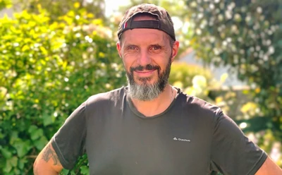
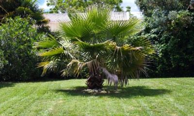
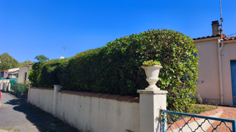
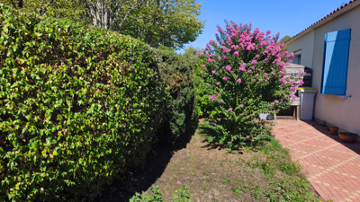

Rochefort & ses alentours · Depuis 2013
Nettoyage de toiture et de véranda, entretien de jardin à Rochefort
A votre service depuis plus de 10 ans, j’interviens à Rochefort et dans les alentours pour prendre soin de vos extérieurs. Je prends le temps d’échanger avec vous pour vous proposer une intervention adaptée à vos besoins.

Mes services pour vos extérieurs
Nettoyage, démoussage et jardinage : découvrez le détail de chaque prestation.

Nettoyage et démoussage de toiture
Grattage manuel des mousses, nettoyage des gouttières et traitement à basse pression.
À partir de 7 € / m²

Nettoyage de véranda
Nettoyage du vitrage et des cadres pour retrouver une véranda lumineuse.
À partir de 10 € / m²

Entretien de jardin
Tonte, taille de haies et débroussaillage, ponctuellement ou au fil des saisons.
Sur devis
Sur le terrain
Mes réalisations en images
Une toiture grattée et pulvérisée, une véranda nettoyée, une haie remise en forme… Voici quelques exemples de mes interventions.
Voir mes réalisations

Les avis de mes clients
« Je suis très satisfaite de l'intervention de l'équipe pour un démoussage de mon toit. Equipe sympathique, travail propre et sens du service. Merci beaucoup »
« Sérieux, ponctualité, efficacité et professionnalisme sont des mots qui résument parfaitement ce duo d'entrepreneurs, intervenus pour le nettoyage de la toiture et de la façade d'une maison à étage. Je garde précieusement les coordonnées de cette Entreprise et je la recommande vivement. »
« J'ai beaucoup apprécier la gentillesse, le sérieux et la qualité professionnelle de M. PUYGRENIER et de son collègue qui ont super bien taillé mes haies. Je les recommande particulièrement et garde précieusement leurs coordonnées pour toutes futures interventions. »
« Equipe de choc! Cédric et Christophe forment un duo sérieux, efficace et tellement sympathique! J'ai fait appel à eux pour mon jardin, les résultats sont surprenants. Quant aux tarifs, des plus raisonnables. Merci Messieurs et à très vite pour ma toiture. »
Contact et devis gratuit
Une question, un entretien à prévoir ? Appelez-moi ou écrivez-moi. Les devis sont gratuits et sans engagement.
J’interviens à Rochefort, Échillais, Tonnay-Charente, Saint-Agnant et dans les alentours.
Du lundi au vendredi, de 8h30 à 19h30
cedric.puygrenier@gmail.com79 rue Lefevre · 17300 Rochefort